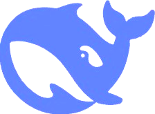

开发者
织雾满穗
HuTinJian

支持者
DeepSeek
AI Assistant
织梦疾追星斗近，拨云终揽霁光欣
宇宙的起源一直是人类最着迷的话题之一。从大爆炸理论到暗物质的发现，现代天文学正在揭开宇宙最深层的秘密。
从 ES6+ 新特性到函数式编程，从模块化到性能优化，掌握这些最佳实践能让你写出更优雅、更高效的 JavaScript 代码。
莫奈、雷诺阿等印象派大师如何用光影和色彩颠覆了传统绘画？探索印象派背后的视觉革命和美学理念。
睡眠不足正在成为现代人的通病。基于最新神经科学研究，这篇文章分享7个经过验证的提升深度睡眠质量的方法。
从个性化学习到智能辅导系统，AI 正在改变教育的面貌。本文探讨人工智能在教育领域的最新应用和未来趋势。
2019年人类第一次拍摄到黑洞照片，这一里程碑式的成就背后有哪些科学突破？事件视界望远镜是如何工作的？
在物质过剩的时代，极简主义提供了一条通往内心平静的路径。学习如何通过"断舍离"找到真正重要的东西。
达芬奇不仅是伟大的画家，更是杰出的科学家和发明家。探索这位文艺复兴巨人如何将艺术与科学完美融合。
量子计算机有望解决经典计算机无法处理的复杂问题。本文带你了解量子计算的基本原理、最新进展和商业应用前景。
